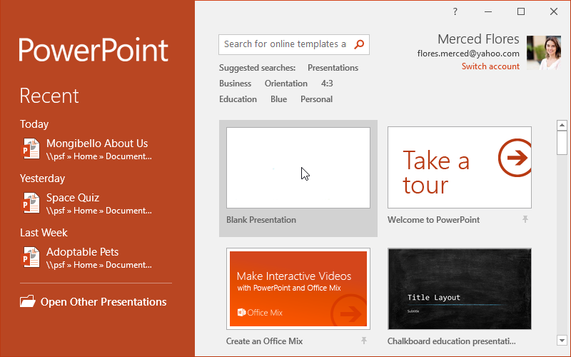
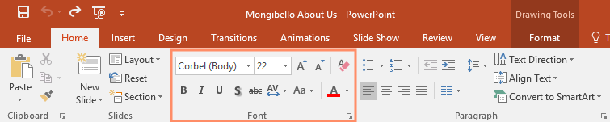
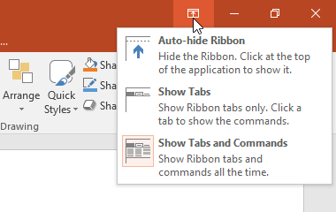
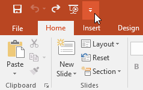
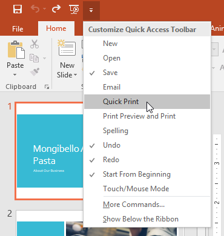
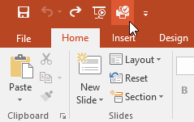
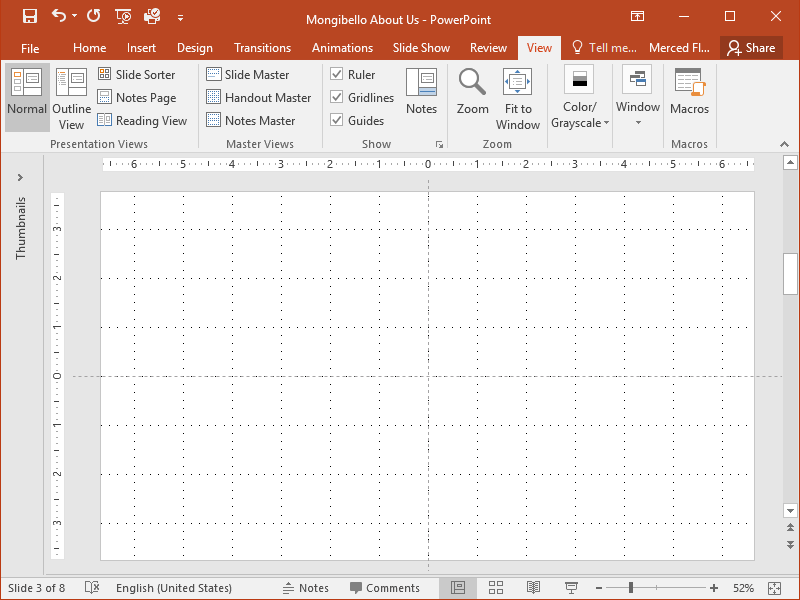
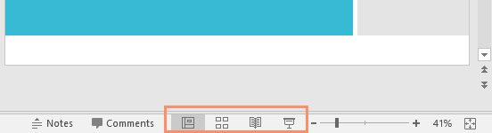
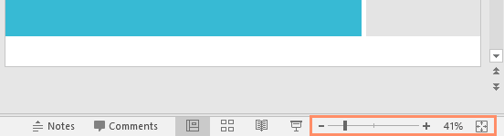
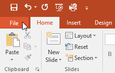

Introducere
.png) Afișarea și ascunderea Panglicii
Afișarea și ascunderea Panglicii
PowerPoint este un program de prezentare care vă permite să creați prezentări dinamice de diapozitive. Aceste prezentări pot include animație, narațiune, imagini, videoclipuri și multe altele. În această lecție, vă veți învăța să vă descurcați în mediul PowerPoint, inclusiv în Panglică, Bara de instrumente Acces rapid și vizualizarea în culise.
Interfața PowerPointCând deschideți PowerPoint pentru prima dată, va apărea ecranul de pornire. De aici, veți putea să creați o nouă prezentare, să alegeți un șablon și să accesați prezentările recent editate. Din ecranul de pornire, localizați și selectați Prezentare goală pentru a accesa interfața PowerPoint.

Lucrul cu mediul PowerPointPanglică și Bara de instrumente Acces rapid sunt locurile în care veți găsi comenzile pentru a efectua sarcini obișnuite în PowerPoint. Vizualizarea în culise vă oferă diverse opțiuni pentru salvarea, deschiderea unui fișier, imprimarea și partajarea documentului.
PanglicaPowerPoint folosește un sistem Ribbon cu file în loc de meniurile tradiționale. Panglica conține mai multe file, fiecare cu mai multe grupuri de comenzi. De exemplu, grupul Font din fila Acasă conține comenzi pentru formatarea textului din documentul dvs.

Unele grupuri au, de asemenea, o mică săgeată în colțul din dreapta jos pe care puteți da clic pentru și mai multe opțiuni.
Afișarea și ascunderea Panglicii
Panglica este concepută pentru a răspunde sarcinii dvs. curente, dar puteți alege să o minimizați dacă descoperiți că ocupă prea mult spațiu pe ecran. Faceți clic pe săgeata Opțiuni de afișare a panglicii din colțul din dreapta sus al Panglicii pentru a afișa meniul drop-down.

- Ascundere automată Panglică : Ascunderea automată afișează registrul de lucru în modul ecran complet și ascunde complet Panglica. Pentru a afișa Panglica, faceți clic pe comanda Expand Ribbon din partea de sus a ecranului.
- Afișați filele : această opțiune ascunde toate grupurile de comenzi atunci când nu sunt utilizate, dar filele vor rămâne vizibile. Pentru a afișa Panglica , faceți clic pe o filă.
- Afișare file și comenzi : Această opțiune maximizează Panglica. Toate filele și comenzile vor fi vizibile. Această opțiune este selectată implicit când deschideți PowerPoint pentru prima dată.
Situată chiar deasupra Panglicii, Bara de instrumente Acces rapid vă permite să accesați comenzi comune, indiferent de fila selectată. În mod implicit, include comenzile Salvare, Anulare, Refacere și Pornire de la început. Puteți adăuga alte comenzi în funcție de preferințele dvs.
Pentru a adăuga comenzi la Bara de instrumente Acces rapid:- Faceți clic pe săgeata derulantă din dreapta barei de instrumente Acces rapid.
- Selectați comanda pe care doriți să o adăugați din meniul derulant. Pentru a alege dintre mai multe comenzi, selectați Mai multe comenzi.
- Comanda va fi adăugată la Bara de instrumente Acces rapid.



PowerPoint include mai multe instrumente pentru a ajuta la organizarea și aranjarea conținutului pe diapozitive, inclusiv rigla, ghidurile și liniile de grilă . Aceste instrumente facilitează alinierea obiectelor pe diapozitive. Pur și simplu faceți clic pe casetele de selectare din grupul Afișare din fila Vizualizare pentru a afișa și a ascunde aceste instrumente.

Zoom și alte opțiuni de vizualizarePowerPoint are o varietate de opțiuni de vizualizare care modifică modul în care este afișată prezentarea. Puteți alege să vizualizați prezentarea în vizualizarea Normală, vizualizarea Sortare diapozitive, vizualizarea Citire sau vizualizarea Prezentare diapozitive. De asemenea, puteți mări și micșora pentru a face prezentarea mai ușor de citit.
Schimbarea vizualizărilor diapozitivelorComutarea între vizualizările de diapozitive este ușoară. Doar localizați și selectați comanda dorită de vizualizare a diapozitivelor din colțul din dreapta jos al ferestrei PowerPoint.

Mărire și micșorarePentru a mări sau micșora, faceți clic și trageți glisorul de control al zoomului din colțul din dreapta jos al ferestrei PowerPoint. De asemenea, puteți selecta comenzile + sau - pentru a mări sau micșora cu incremente mai mici. Numărul de lângă glisor afișează procentajul actual de zoom, numit și nivelul de zoom.

Vedere în culiseVizualizarea în culise vă oferă diverse opțiuni pentru salvarea, deschiderea, imprimarea și partajarea prezentărilor. Pentru a accesa vizualizarea Backstage, faceți clic pe fila Fișier din Panglică.
